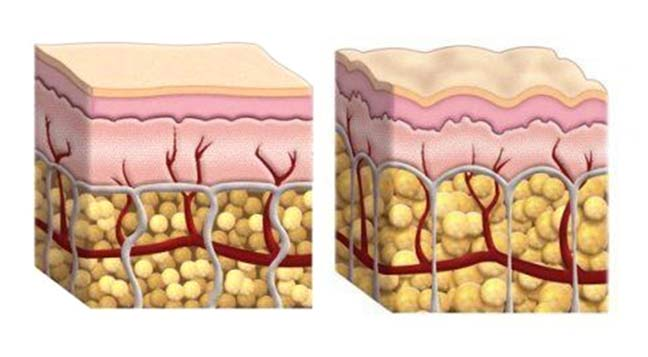
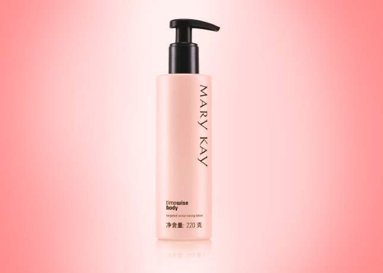

随着年龄增长，很多女性身体肌肤的新陈代谢开始缓慢，从而导致皮脂分泌减少，再加上缺乏运动，饮食无规律，脂肪堆积身材变形，出现橘皮组织。它形成的原因很多，遗传、快速胖瘦、烟酒、熬夜、久坐不运动，或女性荷尔蒙激增时，都有可能造成。橘皮组织其实是一种结构改变的脂肪组织。由于脂肪过度囤积，脂肪细胞体积变大，相互挤压，血液循环因而受阻，所以在皮肤表面就会产生凹凸窝状形式的皮肤。

下面，我们就通过一个小测试看看你的橘皮组织程度吧：
| 1. |
站直后，用拇指和食指轻轻夹捏大腿内侧或外侧，如果看见表皮肌肤出现凹凸不平的情况，那你要注意了，这是橘皮组织的初期现象。 |
| 2. |
站立着，将身体微微转动，如果看见大腿、臀部的肌肤表面出现膨松状，表示你已经有橘皮 组织了。 |
| 3. |
如果不需要转身或夹捏，就可以明显看见大腿肌肤表面的凹凸状，则表示橘皮组织已跟随你 很久了。 |
| |
温馨提示
要想更快更好的达到紧肤的效果，专业的按摩手法必不可少。配合按摩手法可以促进你身体皮肤的血液循环，加速新陈代谢，帮助紧肤产品的吸收和发挥作用。局部橘皮组织现象严重的地方，还可以通过加强按摩，快速消除橘皮组织，预防橘皮组织的堆积。 |
| |
玫琳凯幻时紧肤修体乳内含多种有效成分帮助肌肤持久保湿，调理，紧致肌肤，只需简单一步，就可使你的周身肌肤呈现紧实自然的年轻光采。

当然，想要想让身材立刻S起来，还需要配合特殊的按摩手法哦~

手臂按摩方法
| 1. |
由下至上均匀的涂在手臂的肌肤上。 |
| 2. |
左手臂转到外侧，右手掌从左手腕开始由下往上边拧转边揉擦，一直按摩到肩膀，重复5-10次。换右手，重复相同步骤。 |
| 3. |
左手伸直，右手掌从左手手臂内侧由手腕处开始，由下往上推，一直按摩到肩膀。两手交替做5-10次。 |
小腿按摩方法
| 1. |
先把适量的紧肤修体乳，由下至上均匀的涂在小腿的肌肤上。 |
| 2. |
象拧抹布一样左右拧小腿腿肚的肌肉，从脚踝到膝盖不断改变拧的地方，重复5次。 |
| 3. |
两手握住小腿，大拇指按住小腿前面的腿骨，从下往上按摩，重复5-10次。除了拇指，其它手指也要相应加大力度按摩肌肉。 |
大腿部按摩方法
| 1. |
将腿抬到使肌肉放松的舒适高度，如浴室内的足凳上和类似的地方。 |
| 2. |
先把适量的紧肤修体乳，由下至上均匀的涂在大腿部的肌肤上。 |
| 3. |
双手相叠置于膝盖后侧，左右拧大腿腿肚的肌肉，直至臀部，重复5次。 |
| 4. |
双手展平，置于膝盖两侧，拇指按住大腿正面。双手轻压大腿，由膝盖按摩至腰际，重复10次。 |
| 5. |
双手相叠至于膝盖后侧，重复步骤4。 |
腹部按摩方法
| 1. |
先把适量的紧肤修体乳，均匀的涂在腹部肚脐周围的肌肤上。 |
| 2. |
在腹部同一侧，用双手的大拇指和另外四指捏住一部分皮肤轻轻揉捏，再放手捏住下面一部分皮肤揉捏，由上至下直至腰际，换另一侧，重复3次。 |
| 3. |
双手相叠置于腹部，围绕肚脐顺时针打圈30下。 |
臀部按摩方法
| 1. |
先把适量的紧肤修体乳，由下至上均匀的涂在臀部的肌肤上。 |
| 2. |
用双手手掌贴住臀部，又下而上推揉按摩，重复10次。 |
| 3. |
用双手支撑臀部下方，沿着弧度曲线手向内上方的方向滑动式按摩，重复10次。 |